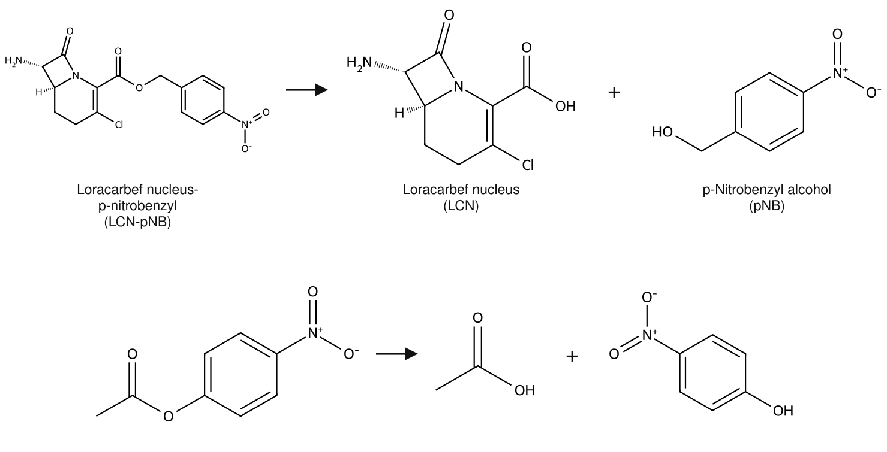
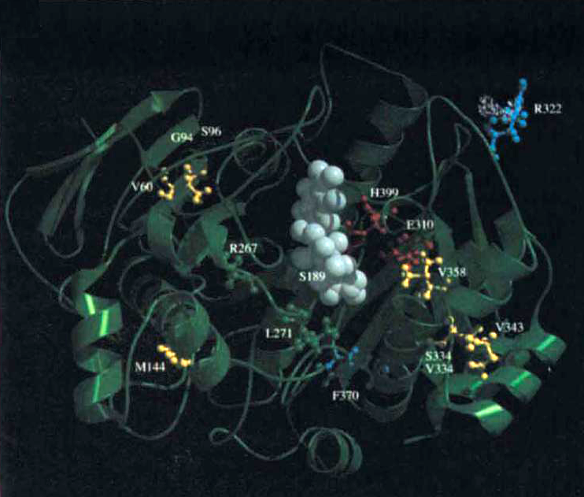

Nat Biotechnol. 1996 Apr;14(4):458-67 PMID: 9630920
Let’s look at an example from the early days of this experiment from Francis Arnold. During the synthesis of beta-lactam antibiotics, there is a difficult deprotection step that the authors wish to perform with an enzyme. They need to the enzyme to hydrolyze this nitrobenzyl ester. Unfortunately, the chemical is sparingly soluble in water, so they must add DMF to the reaction. Unfortunately, the enzyme loses activity in the presence of DMF. So, they want to improve the stability of their enzyme in DMF/water mixtures. The specific reaction they want to perform is difficult to assay. Neither the starting material nor products are chromophores, so the only way to watch this reaction would be LC-MS. For directed evolution, you typically need to assay around 10,000 variants to find useful variants. A typical LC-MS instrument takes 15 minutes per run, so this would be a very long project! So, the experimentalists note that this enzyme will also catalyze the hydrolysis of p-nitrophenyl esters such as this acetate ester. Though it has one carbon less than their ‘real’ substrate, t is structurally a very similar molecule and is also tolerated by the enzyme. P-nitrophenol, though, is yellow, so they can readily detect whether this reaction occurred without the need for cumbersome instruments. The reaction they actually wanted, above: an esterase cutting the p-nitrobenzyl protecting group off the loracarbef nucleus. The reaction they could watch, below: the same enzyme cutting p-nitrophenyl acetate, which releases yellow p-nitrophenol.
Very approximate values of occurrence: